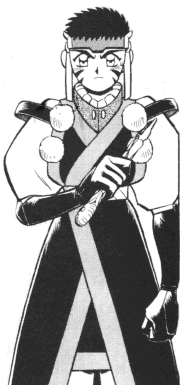

Regular FanFics: N-Q
|
This is the regular Tenchi fan fiction section. (No X-overs, Lemons, or tangental
work) All stories are sorted by either the author's last name or their pen
name. If you would like your stories published in this archive, please
go here. |
New * A-B *
C-D * E-H *
I-K * L-M * N-Q *
R-S * T-Z |
N
Afridale "ClockWatcher" N.
(the_suicidal_dreamer@hotmail.com)
Naiyami Kasaki
(chibiachika@masakishrine.com)
Jonah Nagashima
(Executioner441@yahoo.com)
Brian Navy (Geosword@usa.net)
Angela Nebedum
(pretty_sammy20@hotmail.com)
Nega Moon Brat Jessy
(JesJes724@aol.com)
Negative-Z (zacsimon@cox.net)
-
The Summer Wind
Blue eyes. Beach bunnies. Bushy tales. Bosom buddies. 35KB
-9/13/2002
Paul Neiland (krain@tx3.com)
Nekokun
(Nekokun@ix.netcom.com)
Nekokun
(Nekokun@ix.netcom.com) and
Aldrich "GenSao" Bautista
(GenSao@geocities.com)
-
"Ryouko's Loss"
A little lie sets off a chain of interesting events for the Tenchi
gang.. (Multipart) -2/14/2000
Kristin "Raine" Nelson
(stripedogmara@yahoo.com)
Neo Aeka
(Neo_Aeka@PlanetJurai.com)
NeptuneDream
(NeptuneDream@n2sun.com)
Gregory E. Neric
(Ronoken@aol.com)
The New Reb
(Archer@senet.com.au)
The Nexodus (Nexodus@msn.com)
Long Ngo (ShortYes@aol.com)
-
Unseen Fate
A responce to GenSao's Aeka challenge. 5KB -12/12/1998
Daniel Nguyen
(Sephzero@hotmail.com)
Ngan Nguyen
(tiger1621@hotmail.com)
-
A Wish Granted
Ryoko makes a wish and affects everyone. 21KB -2/12/2002
Nick (Tenchi316@aol.com)
-
Ohayo Tenchi!
The Tenchi crew is zapped into a haunted mansion and are stalked by
zombies, rabid dogs, and one big guy with a rocket launcher. (Multipart)
-1/8/2001
William Nichols
(vette1701@earthlink.net)
Carissa "RyokoBelldandy" Nicole
(poprlznhevymtltoo@yahoo.com)
Nik (j.michael@pmail.net)
Nitsuj Allmighty
(Knight_of_Pluto@juno.com)
David "Kthardin" R. Nolen
(Kthardin@geocities.com)
Craig "Black Seventeen" Norris
(LardAlmighty@netscape.net)
-
"Aeka's Eyes"
Kiyone's former partner, now a wanted man, lands on Earth and falls
in love with Aeka. Then, he must deal with a bounty hunter who comes to claim
her. 61KB -4/2/2001
-
"The Specter Affair"
Sequel to "Aeka's Eyes." Masato returns, and must defend the object
of his desire from a legendary assassin. 43KB -4/16/2001
-
"Jokers Wild"
Masato plays a trick on Ryoko, and in turn gets a little more than
he bargained for. 27KB -5/21/2001
-
The Masato Saga
Kiyone's former partner, now a wanted man, crashes to Earth and falls
in love with Ayeka. Then, he must deal with a bounty hunter who attempts
to claim her. (Multipart) -9/25/2001
-
Project Pinnacle
After a ship crashes near the Masaki household, Washu finds a strange
substance in the woods. However, this substance is much more than it appears
to be. (Multipart) -3/27/2002
-
"Plant a Kiss"
A Christmas comedy where Ryoko DEFINITELY makes Tenchi's naughty list.
48KB -12/19/2001
Ryan Norman (Deevra@yahoo.com)
Nurdbot
(QuantickALE5@aol.com)
-
Muio X
Author's first fic in script format. (Multipart) -8/1/2001
O
Obra Felix R
(fro70550@cmsu2.cmsu.edu)
Thor Odinson (Lfp6@yahoo.com)
Brendan O'Donnell
(72113.1507@CompuServe.com)
Aaron Oefinger
(aekasbitch@yahoo.com)
Alan O'Kelly
(kodachi16@fcmail.com)
-
Bloody Angel
After Sasami nearly dies, she is visited by Tsunami in her sleep.
In this dream she is told that the entire Jurai Empire is in danger. It is
up to Tenchi and the girls to stop The destruction of Jurai. 96KB
-10/16/1999
Okoyr
(veggingout@netzero.com)
Ongaku Muyo
(OngakuMuyo@fcmail.com)
-
Ohayo Ryoko!
Tenchi finally choses one. (Multipart) -9/19/1998
Omanyte-chan
(sailoromanyte@sailormoon.com)
Operative Akina
(OperativeAkina@aol.com)
-
Akina Universe
Kiyone's sister Akina of the Universe Forces is here! (Multipart)
-1/4/2002
Arielle Orsini
(Angel781430@aol.com)
Kris Osborn (jslash@pldi.net)
-
Goodbye Tenchi
All of the girls leave, and something screwy is going on in the universe.
17KB -1/22/2001
Clayton Overstreet
(clayton_n@hotmail.com)
-
Consequenses of dreams that come true
Ok Ryoko got Tenchi... now what? 82KB -12/22/2000
-
Merea
Sasami picks up afew friends on the way home. 6KB -12/22/2000
-
No need to fight
Well everyone came back... now what? 37KB -12/22/2000
-
Prom Night
Tenchi and Ryoko... need I say more? 11KB -12/22/2000
-
Ayeaka's Mistake
Ryoko's thrapy leads to Ayeaka's insanity. 40KB -12/19/2000
-
Formal Wear
A royal ball, romantic music, what more could you ask for? 19KB
-1/8/2001
-
Obsession
A sequel to 'Ayeaka's Mistake' 18KB -1/8/2001
-
True Happyness: The perfect fan fic
Tenchi gets Ryoko. Mihoshi gets Kyonei. Washu recounsels with family.
What else do you need? 38KB -1/8/2001
-
Ryoko's Birthday
A party for Ryoko. 11KB -1/8/2001
-
Yugi's Dream
Well when you are all powerful and have nothing to do, a trip around
the multiverse to visit the family doesn't sound so bad. 30KB -1/8/2001
-
Appologies
Well they've stopped Yugi and Tenchi and Ryoko have something to say
to each other. 5KB -1/8/2001
-
Ryoko's Baby
Ryoko has kids, Aeka shows up one last time, and everything ends happily
for most of them. 13KB -1/8/2001
-
Why don't you love me?
Ryoko gives up on Tenchi and runs away. Tenchi goes after her. 9KB
-1/15/2001
-
Protection
We find out why Ryoko thinks she needs to protect Tenchi at night.
17KB -2/1/2002
-
Interesting Diversions
Ryoko works out the perfect plan to be alone with Tenchi. 25KB
-12/27/2000
-
A Fair Contest
Washu goes a litle crazy(er) and sets up a scavenger hunt. 14KB
-1/22/2001
-
Other Characters
A fic that focuses on the 'Minor' characters in Tenchi's life. 21KB
-1/22/2001
-
Tenchi's Heart
Aeka and Tenchi get married in the first paragraph. 12KB
-1/8/2002
-
A Long Trip
Tenchi and Ryoko's honeymoon. 26KB -1/22/2001
-
Mama
My first fic with Mayuka in it. 20KB -1/29/2001
-
Training
One of my average fics. Tenchi beats Yosho at swordplay so they start
off on some new training with a little help from the girls. 23KB
-1/29/2001
-
Mama 2
Sequel to the fic 'Mama'. 33KB -2/5/2001
-
Lonely Nights
Ryoko has trouble sleeping so she goes to Tenchi for help. 27KB
-2/5/2001
-
Friend or foe
A visit from the counsel of Jurai splits the family apart and changes
everything. 51KB -5/31/2001
-
Art
Ryoko has a new hobby. 29KB -7/24/2001
-
Kiyone get's Sick
Kiyone falls ill and Mihoshi takes care of her. 21KB -7/24/2001
-
Halloween
Tenchi has a party on Halloween and Aeka wins a kiss. 17KB
-8/10/2001
-
Precious Memories
Ryoko loses her memory. 40KB -8/10/2001
-
Straight forward
Ryoko sits Tenchi down and explains very clearly exactly how she feels.
21KB -8/10/2001
-
Freaky Friday
Tenchi kissing Aeka? Something has to be up. 32KB -7/30/2001
-
Monsters
Tenchi calls Ryoko a monster to her face... and she couldn't be happier.
29KB -7/30/2001
-
Why Do These Tears Come at Night
Tenchi loves Ryoko and Kiyone learns some things about Mihoshi. 34KB
-9/21/2001
-
The Perfect Gift
Tenchi finds the perfect gift to show Ryoko his feelings. 45KB
-9/21/2001
-
A Day Out
Ryoko and Tenchi's second date and a Mihoshi-Kiyone story too. 38KB
-9/21/2001
-
Who are your friends?
Tenchi is on his way to a family reunion when he finds out that he
has enemies he couldnt have guessed at. 26KB -12/19/2001
-
No Need for Presents - Episode One
My idea of a continued Tenchi TV series. 18KB -4/8/2002
Hatsumi Owatama
(gailamee@hotmail.com)
Ozelon
(kw.oleson@verizon.net)
-
Because It's There
A strange fanfic with no plot, just random acts of insanity.(Multipart)
-11/11/2001
P
James Padilla
(Santaclaws975836@aol.com)
Justin "J-Pikachu" Palmer
(jpikachu@ntlworld.com)
Jenn "Jennani " Patterson
(RaeKitty82@aol.com)
-
Tenchi Muyo: The Last Day
A mix of all the different universes of Tenchi Muyo. It includes,
Azusa, Nagi, and Pretty Sammy to name a few. 23KB
Joel C. "StrikesTwice" Patoine
(STRIKESTWICE@hotmail.com)
-
Ever After
It's a few years later and Sasami going to High School. (Multipart)
-9/17/2001
-
Heart and Soul
Ryoko a devil. Ayeka an Angel. In a universe where the soul is the
most powerfull thing of all can Tenchi defend his? (Multipart)
-6/21/2000
Andrea "Achan" Paulinski
(washuu@execpc.com)
Jessica "Glitter Faery" Pawlak
(Dragonette21@hotmail.com)
Pawn Shop's Conners
(Psconners@aol.com)
Paymo21 (paymo21@home.com)
Kyle Peck
(crazy_kyle_hw@yahoo.com)
-
Scorp Series
Scorp, a free form RPG character as invented byWashu, is introduced.
(Multipart) -12/22/2000
Orlando Pedrajas
(gorlando@one.net)
John Perry (greegose@aol.com)
Vincent Perry
(ivperry@starpower.net)
Sean "Shikujiru" Peters
(glaces_carrot@hotmail.com)
PHaw410653
(PHaw410653@aol.com)
Pheonix Moone
(leopard138@hotmail.com)
-
No Need For the Tiger
A paradoxal tale. (Multipart) -2/5/2001
-
No Need For Another
After two marriages and two months on Jurai, Raikiyo visit Umbreinos
for El Festivales de Noches. (Multipart) -5/28/2001
Kyler Phillips (kylerp@usa.net)
Piemur1 (Piemur1@lycos.com)
-
Sami-Ohki
A series where Sasami gets turned into a cabbit. (Multipart)
-1/30/2002
Ben "Blackphoenix" Piers
(blackphoenix27@hotmail.com)
-
No Need for Broken Hearts
Tenchi has made up his mind, but what will the other girls do? Expected
to be a long epic story. (Multipart) -1/4/2002
Lindsay "Demoness" Pivin
(Ryoko@Tracyinternet.net)
-
Memories
Ryoko has mysteriously disappeared. The Masaki family and friends
search for her, but to no avail. What will become of Tenchi and Ayeka since
Ryoko is gone? (Multipart) -3/11/2002
-
Emptiness
Hurt feelings, broken hearts, and an emptiness lingering in people's
souls. 37KB -11/11/2001
-
Vanished
Ryoko gets her feelings hurt, vanishes and hasn't been seen for a
while. 16KB -11/11/2001
Platinum Dragon
(Platinum_Dragon@usinternet.com)
Pocahontas
(dancengurl92886@aol.com)
-
"Drop in the Ocean"
Ever wonder why Ryoko puts up with the crap she gets from Tenchi all
the time? A short story from her PoV that will lead into a longer fic. 10KB
-12/23/2001
-
What Tomorrow Will Bring
Ryoko's leaving? Something's definitely not right! How will the Masaki
family react to this trauma? Takes place after the Haruna movie. (Multipart)
-5/2/2002
Noah "Jedi" Posthuma
(JediGotenks0@aol.com)
-
My Sunshine
A Tenchi + Ryoko fic based on a song. 15KB -11/7/2001
Justin A. "Craeyst Raygal" Porter
(Craeyst@aol.com)
-
Gold and Silver
Mihoshi finds her fantasy man in a photo of Yosho's partner in knighthood.
(Multipart) -5/6/2002
-
Sail Away - Prologue : "Looking to the
Sea"
Kiyone finally gets her wish... A new partner and a transfer! But
will he be worse and why is she needed in the Bahamas? 16KB -5/6/2002
-
Days of Future Passed
A Shin Tenchi fic: Hotsuma lies in wait for a heartbroken Ryoko to
fall into his mistresses trap, but something goes awry. (Multipart)
-9/17/2002
Daniel "Ssedrey" Powell
(preymaker@excite.com)
Psyo_mant1s
(psyo_mant1s@yahoo.com)
The Psychomatic Poet
(psychomatic_poet@hotmail.com)
Pudduh (Puddah@ntlworld.com)
-
No need for Watching
A Foreign Exchange student arrives for the summer, bringing love and
secrets with him that could effect the whole Tenchi crew! (Multipart)
-2/5/2001
-
The String Robberies
Mihoshi is out to solve the biggest Spon like crime ever! 21KB
-4/23/2001
-
Trust
A whole new universe for Tenchi to play in. (Multipart)
-7/20/2001
Purple Chipmunk
(PurpleChipmunk88@aol.com)
PurpleSailorSaturn7
(PurpleSailorSaturn7@sailormoon.com)
Q
Nick "The Jackal" Quijano
(carlosaq@frontiernet.net)
Quistis
(SilverDragon2005@juno.com)
and Selphie